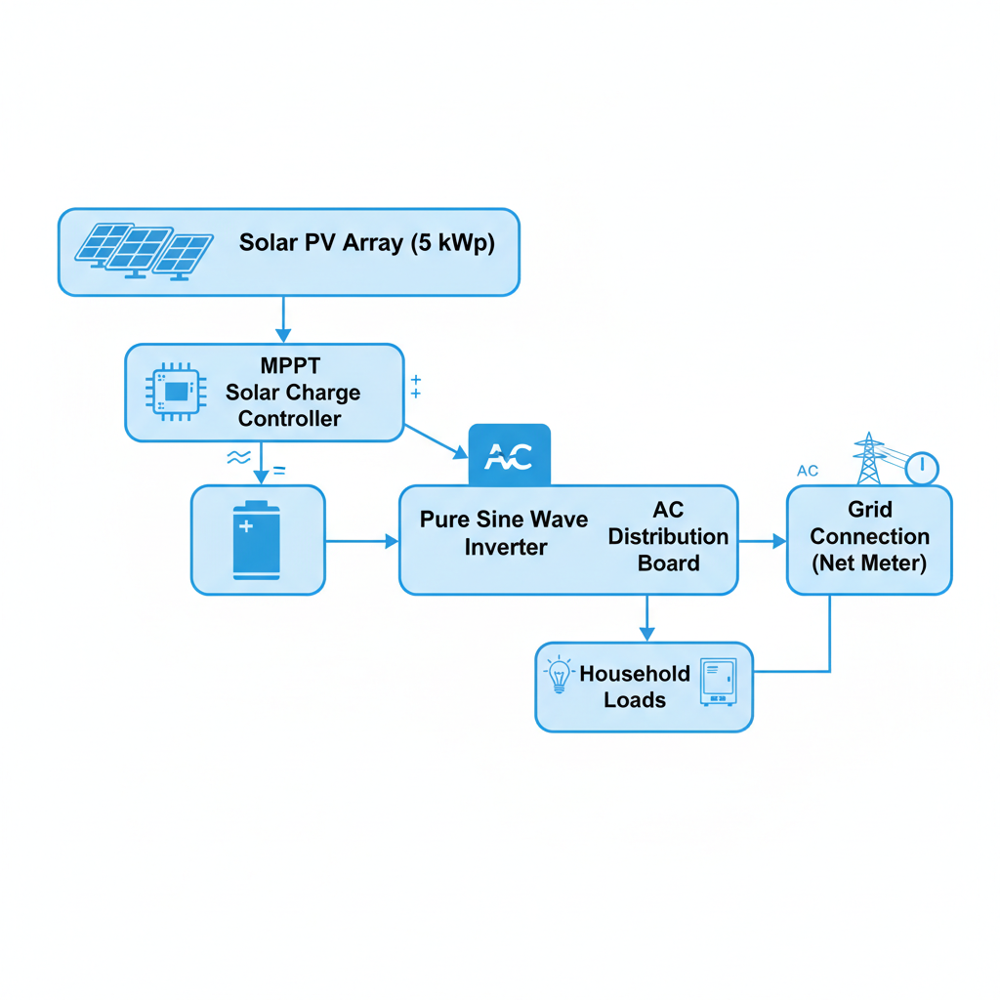
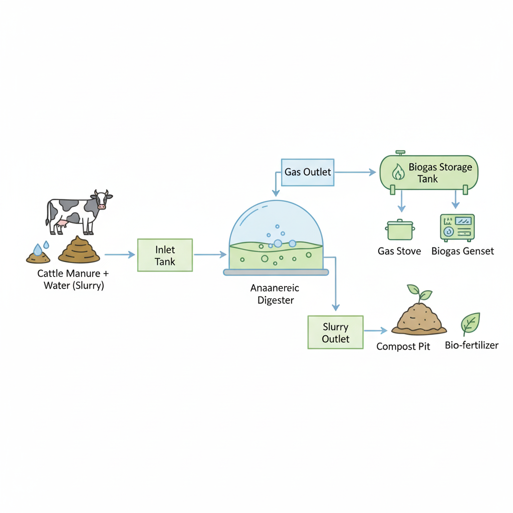
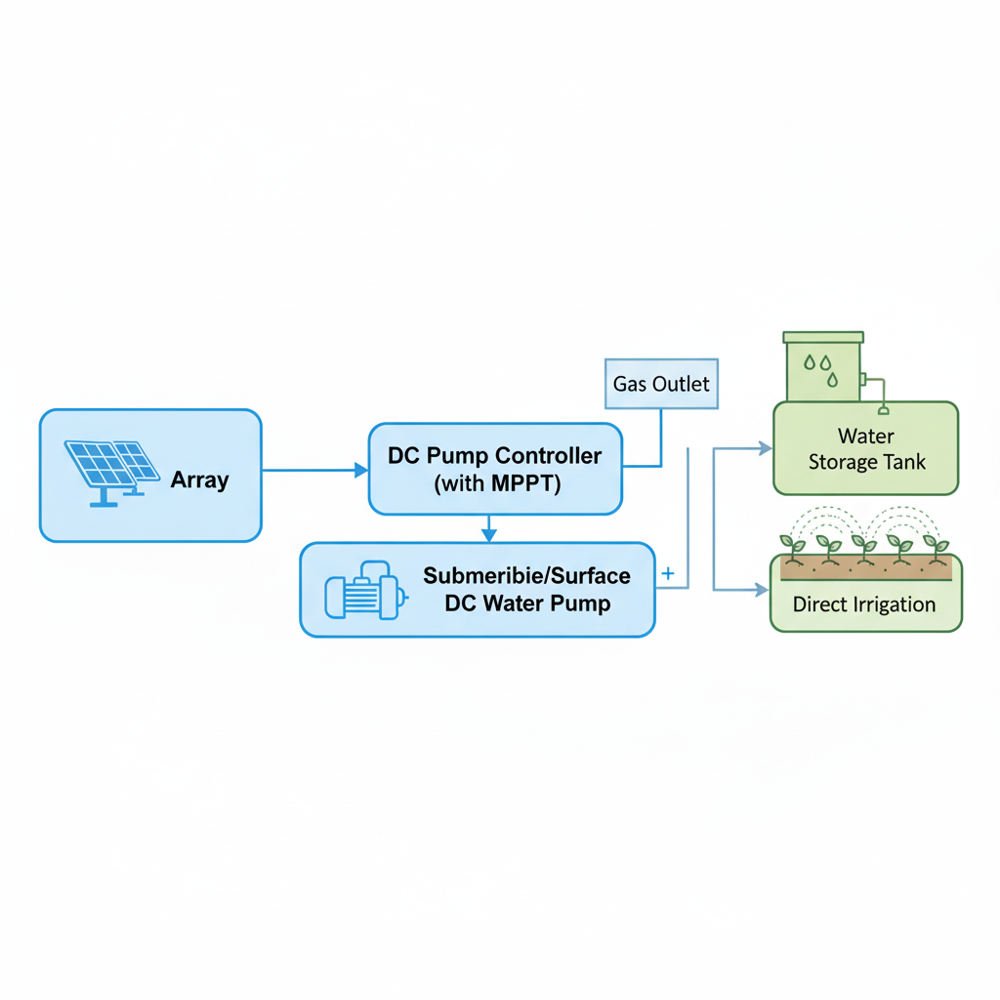

FT-IV Renewable Energy Design Portfolio
Welcome! This portfolio presents three renewable energy system designs with block diagrams, technical specifications, and visual data representations.
It showcases practical applications of solar and biomass technologies in real-world scenarios. Please use the navigation on the left to explore each activity.
Activity 1: Rooftop Solar PV System (5 kW)
Overview
This 5 kW rooftop solar system can generate 20–25 kWh/day under average sunlight conditions. It supplies energy to a 3–4 bedroom house, covering up to 80% of daily needs. With net metering, surplus energy reduces electricity bills and carbon footprint.
Key Specifications
| Component | Specification |
|---|---|
| Solar Panels | 5 kW, Monocrystalline, 18% efficiency |
| Battery Storage | 10 kWh Li-ion |
| Inverter | Pure Sine Wave, 5 kW |
| Daily Output | 20–25 kWh |
| Estimated Savings | ₹3,000–₹4,000/month |
Benefits
- Reliable electricity even in cloudy conditions
- Reduces dependence on fossil fuels
- Monitoring for energy usage and production
- Eco-friendly and sustainable
Activity 2: Solar-Powered Irrigation Pump
Overview
Pumps up to 5,000 liters/hour for a 2-acre farm, reducing reliance on diesel pumps. With automated soil moisture sensors, water waste is reduced by up to 30%, improving crop yield and saving approximately ₹2,500/month on fuel.
Key Specifications
| Component | Specification |
|---|---|
| PV Array | 3 kW, Polycrystalline |
| Pump Type | Submersible, 5,000 L/h |
| Controller | DC with MPPT |
| Automation | Soil moisture sensors & timers |
| Estimated Savings | ₹2,500/month on fuel |
Benefits
- Reliable irrigation for remote farms
- Reduces greenhouse gas emissions
- Optimized water usage with sensors
- Supports climate-smart agriculture
Activity 3: Biogas System for Dairy Farm (100 Cattle)
Overview
Produces 25–30 m³ of biogas/day, generating 5–6 kWh of electricity. Digestate fertilizes 2–3 acres of crops annually. Farms can save ₹10,000–₹15,000/year on energy and cooking fuel while reducing methane emissions.
Key Specifications
| Component | Specification |
|---|---|
| Digester | Anaerobic, 100 cattle capacity |
| Biogas Output | 25–30 m³/day |
| Electricity Production | 5–6 kWh/day |
| Digestate Use | Bio-fertilizer for 2–3 acres |
| Estimated Savings | ₹10,000–₹15,000/year |
Benefits
- Renewable energy from farm waste
- Reduces greenhouse gas emissions
- Produces organic fertilizer
- Supports sustainable farming and energy independence